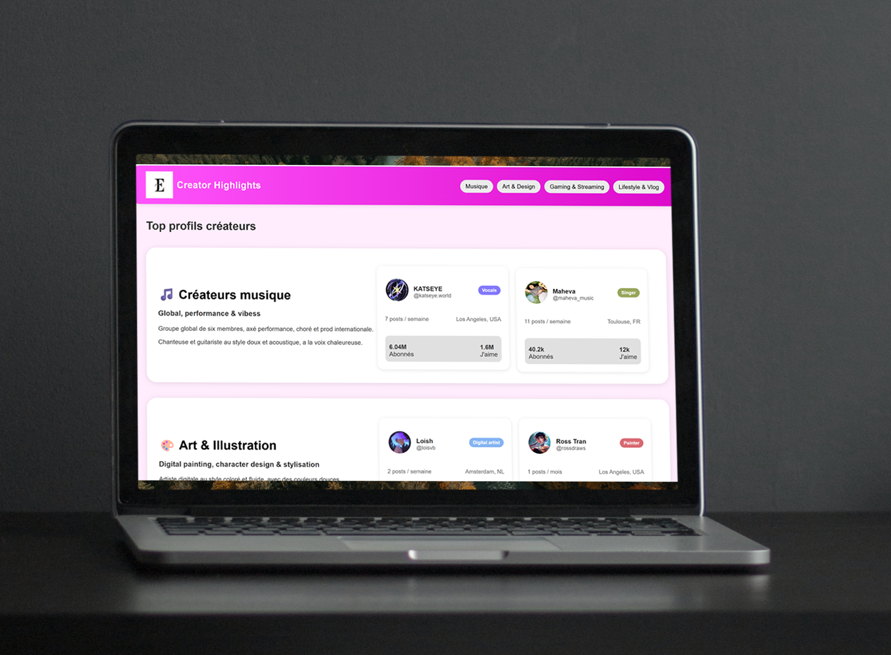
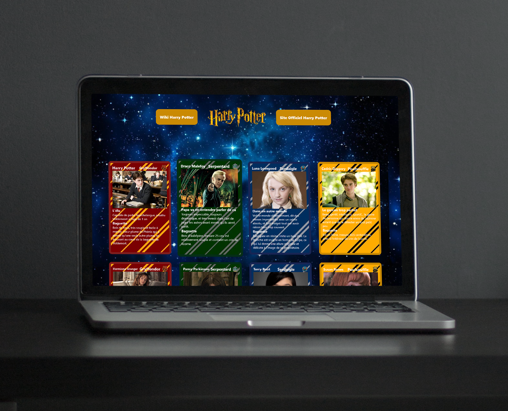
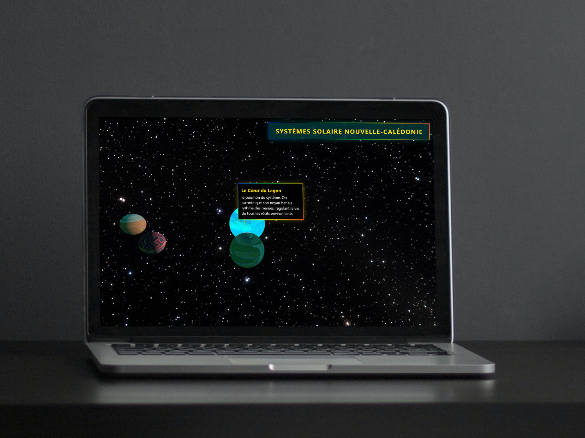
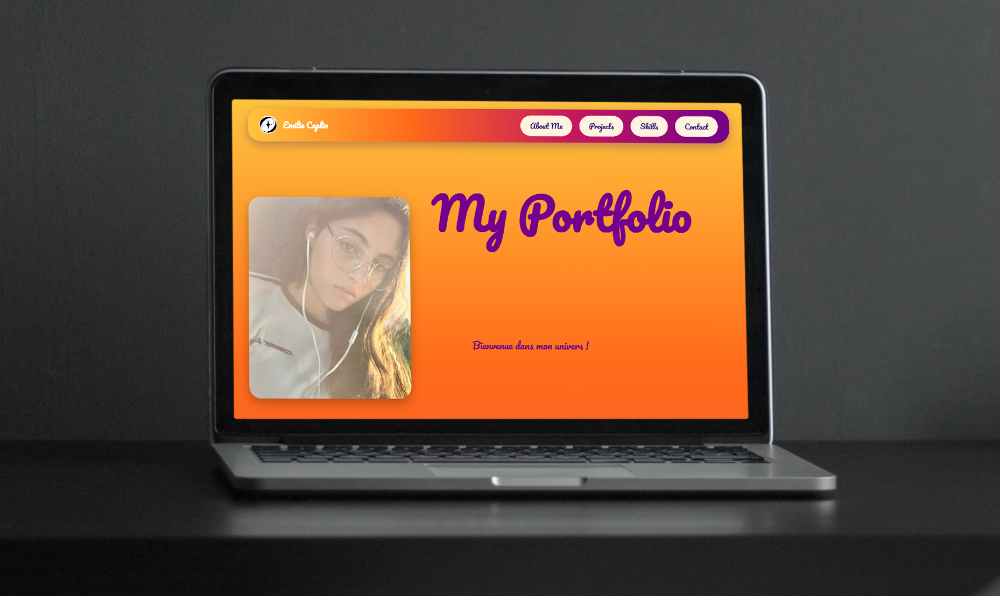

Ce projet fait durant un cours, consiste en la conception et le développement d’une interface web dédiée à la mise en avant de profils de créateurs de contenus, organisés par thématiques (musique, art, gaming, lifestyle). L'objectif est d'offrir une expérience utilisateur fluide pour découvrir des profils via une navigation horizontale par catégories. Chaque créateur est présenté sous forme de carte (card) regroupant ses informations clés (photo, pseudo, localisation, métriques d’abonnés). J'ai réalisé l'intégration front-end en HTML et CSS sur Visual Studio Code, en travaillant minutieusement le design d'interface (arrondis, ombres portées, typographies) et en veillant à obtenir une mise en page propre, moderne et responsive.
Cet exercice m'a permis de consolider mes bases en développement web, en combinant la structuration de données utilisateurs avec un design d'interface soigné et orienté produit. Cette trace valide mes acquis pour les apprentissages critiques suivants :
AC14.01 - Exploiter de manière autonome un environnement de développement efficace et productif.
AC14.02 - Produire des pages Web fluides incluant un balisage sémantique efficace et des interactions simples.
AC14.03 - Générer des pages Web à partir de données structurées.

Ce projet a été réalisé en classe en suivant les consignes du professeur. L'objectif était de concevoir et de développer une interface web affichant des cartes à collectionner. Passionnée par cet univers, j'ai choisi le thème Harry Potter et je me suis inspirée du design des cartes Pokémon pour présenter les différents personnages du film selon leur maison (Gryffondor, Serpentard, etc.). J'ai réalisé toute l'intégration web en HTML et CSS, en structurant l'affichage sous forme de grille. J'ai également intégré dans le bandeau de navigation (header) des liens hypertextes menant vers des sites de référence, à savoir le site officiel et le Wiki Harry Potter. C'est l'un de mes projets préférés de l'année et j'en suis très fière !
Cet exercice m'a permis de lier mes centres d'intérêt à une mise en pratique concrète de l'architecture de l'information et du design d'interface orienté utilisateur. Cette trace valide mes acquis pour les apprentissages critiques suivants :
AC14.01 - Exploiter de manière autonome un environnement de développement efficace et productif.
AC14.02 - Produire des pages Web fluides incluant un balisage sémantique efficace et des interactions simples.
AC14.03 - Générer des pages Web à partir de données structurées.

Ce projet a été réalisé en autonomie, avec la possibilité de s'appuyer sur l'intelligence artificielle pour surmonter les blocages techniques. L'objectif était d'utiliser JavaScript pour concevoir et animer un système planétaire en 3D. Pour ce faire, j'ai choisi de mettre à l'honneur la Nouvelle-Calédonie, où j'ai vécu toute mon enfance. Chaque élément du système représente un emblème de l'île : le soleil symbolise le lagon, tandis que les trois autres planètes incarnent le Cœur de Voh, la terre rouge et la barrière de corail. Ce travail complexe d'intégration et de script m'a permis de m'initier à la logique de programmation et de manipuler des scripts interactifs.
Cet exercice exigeant a renforcé ma capacité à lier un concept créatif et personnel à du développement front-end technique. Cette trace valide mes acquis pour les apprentissages critiques suivants :
AC14.02 - Produire des pages Web fluides incluant un balisage sémantique efficace et des interactions simples.
AC14.03 - Générer des pages Web à partir de données structurées.

Ce projet a été réalisé dans le cadre de la conception et du développement de mon portfolio professionnel. L'objectif était de créer un site de A à Z pour centraliser mes projets et valoriser mon profil. J'ai d'abord réalisé toute la phase de conception et de maquettage graphique (UI/UX) sur Figma. Ensuite, je suis passée au développement front-end et back-end sur Visual Studio Code en structurant le code selon une architecture MVC pour assurer une gestion rigoureuse des données. Enfin, j'ai géré le déploiement et la mise en ligne du site sur une solution d'hébergement standard, tout en intégrant mes réseaux professionnels (LinkedIn) pour poser les bases de mon identité numérique.
Ce projet vitrine m'a permis de maîtriser l'intégralité de la chaîne de production d'un site web, de la première esquisse graphique jusqu'au déploiement technique et à la stratégie de communication personnelle. Cette trace valide mes acquis pour les apprentissages critiques suivants :
AC13.05 - Designer une interface web (wireframes, UI) (S2).
AC14.04 - Mettre en ligne une application Web en utilisant une solution d’hébergement standard.
AC14.05 & AC14.06 : Modéliser les données et déployer une application Web en utilisant un framework MVC (S2).
AC15.03 - Découvrir les écosystèmes d’innovation numérique.
AC15.05 - Construire une présence en ligne professionnelle (personal branding) (S2).